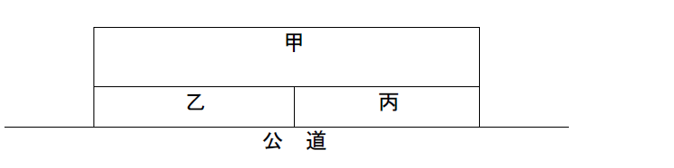

1 土地の所有者が境界付近における障壁の修繕をするために隣地を使用する必要がある場合であっても、隣地上の住家については、その居住者の承諾を得なければ、立ち入ることはできない。
2 土地の所有者は、境界付近において建物を修繕するために必要があるときは、隣人の承諾がなくても、隣人の住家に立ち入ることができる。
3 公道に至るための他の土地の通行権（以下｢囲繞地通行権｣という｡）に関して。他の土地に囲まれて公道に通じない土地（以下｢袋地｣という｡）の所有権を取得した者は、所有権の移転の登記をしなくても、袋地を囲んでいる他の土地（以下｢囲繞地｣という｡）の所有者に対して、囲繞地通行権を主張することができる。
4 Ａから袋地（他人の土地に囲まれて公道に通じない土地）を買い受けたＢは、その袋地について所有権の移転の登記をしていなくても、囲繞地（袋地を囲んでいる土地）の全部を所有するＣに対し、公道に至るため、その囲繞地の通行権を主張することができる。（H24-07-オ）（H01-08-3）
5 公道に至るための他の土地の通行権（以下｢囲繞地通行権｣という｡）に関して。民法第210条の規定による囲繞地通行権が認められる場合の通行の場所及び方法は、通行権者のために必要であり、かつ、囲繞地のために損害が最も少ないものを選ばなければならない。（R05-08-ウ）
（参考）
民法
第210条 他の土地に囲まれて公道に通じない土地の所有者は、公道に至るため、その土地を囲んでいる他の土地を通行することができる。
2 池沼、河川、水路若しくは海を通らなければ公道に至ることができないとき、又は崖（がけ）があって土地と公道とに著しい高低差があるときも、前項と同様とする。
6 民法第210条の規定による通行権を有する者であっても、通路を開設することはできない。（R02-09-エ）
（参考）
民法
第210条 他の土地に囲まれて公道に通じない土地の所有者は、公道に至るため、その土地を囲んでいる他の土地を通行することができる。
2 池沼、河川、水路若しくは海を通らなければ公道に至ることができないとき、又は崖（がけ）があって土地と公道とに著しい高低差があるときも、前項と同様とする。
7 袋地の所有者は、囲繞地の通行による損害について、囲繞地の所有者に対し償金を支払うことを要しない。
8 公道に至るための他の土地の通行権（以下｢囲繞地通行権｣という｡）に関して。Ａがその所有する一筆の土地を甲土地と乙土地とに分筆し、甲土地をＢに譲渡するのと同時に乙土地をＣに譲渡したことによって甲土地が袋地となった場合には、Ｂは、乙土地以外の囲繞地について囲繞地通行権を有することがある。
9 分割によって袋地が生じた場合には、袋地の所有者は、公道に至るため、他の分割者の所有地のみを通行することができるが、償金を支払わなければならない。
10 公道に至るための他の土地の通行権（以下｢囲繞地通行権｣という｡）に関して。共有物の分割によって生じた袋地の所有者が、他の分割者の所有地（以下｢残余地｣という｡）について有する囲繞地通行権は、当該残余地について特定承継が生じた場合には、消滅する。
11 Ａが所有する甲土地を二つに分筆してその一つをＢに譲渡したところ、Ｂの取得した土地が公道に通じない土地となった場合、ＢはＡが所有する残余地について通行権を有するが、ＡがＣに対して残余地を売却した場合、当該通行権は消滅する。
12 Ａが、その所有する甲土地及び乙土地のうち甲土地をＢに譲渡した際に、これにより、Ａの所有する乙土地が公道に通じない土地になることを認識していた場合、Ａは、公道に至るために甲土地を通行することはできない。
13 土地の所有者は、他の土地に設備を設置しなければ電気の供給を受けることができない場合であっても、当該他の土地の所有者の承諾を得なければ、当該設備を設置することはできない。
14 土地の所有者は、直接に雨水を隣地に注ぐ構造の屋根を設けてはならない。
15 堀の所有者は、対岸の土地が他人の所有に属するときは、当該土地の所有者の承諾を得なければ、当該堀の幅員を変更してはならない。
16 土地の所有者は、隣地の所有者と共同の費用で、境界標を設けることができる。
17 Ａの所有する甲土地と、Ｂの所有する乙土地とが、互いに相隣地の関係にある。Ａは、甲土地と乙土地との境界に境界標を設けたいと考えた場合に、Ｂに対し、共同の費用でこれを設けることを求めることはできない。
18 境界線上に設けられた囲障は、相隣者の共有に属するものと推定される。
19 土地の所有者は、隣地の竹木の枝が境界線を越えるときは、その枝を自ら切り取ることができる。
20 教授： 所有権の取得の形態には、承継取得と原始取得の2つがありますね。民法には、付合、混和及び加工の規定がありますが、これらの規定による取得は承継取得と原始取得のどちらに当たりますか。
学生：ア 原始取得に当たります。
21 無主の不動産は、先占によりその所有権を取得することができる。
22 Ａの所有する甲土地の中からＢが埋蔵物を発見した場合において、その所有者が判明しないときは、Ｂが当該埋蔵物の単独所有権を取得する。
23 Ａ所有の建物甲及び建物乙が、その間の隔壁を除去する等の工事によって、一棟の建物丙となった場合には、建物甲の所有権は、建物丙のうちの建物甲の価格の割合に応じた持分となり、Ａは、この持分上に抵当権を設定することができる。
24 Ａの所有する甲土地に、甲土地の使用収益の権原を有しないＢが、その所有する種子をＡに無断でまいた場合には、生育した苗の所有権は、Ｂに帰属する。
25 Ａが、Ｂの所有する甲建物を無権原で占有し、甲建物に増築をした場合には、当該増築部分が甲建物の構成部分になったときであっても、Ｂは、Ａに対し、甲建物の所有権に基づき、当該増築部分の撤去を請求することができる。
26 ＢがＡ所有の甲土地上に無権原で立木を植栽した場合、Ａは、Ｂに対し、当該立木を収去して甲土地を明け渡すよう請求することができる。
27 Ａ所有の土地をＢが自己所有の土地と誤信して立木を植栽していたところ、Ｃが当該立木を伐採して伐木を持ち出した場合には、Ａは、Ｃに対し、当該伐木の所有権を主張することができる。なお、｢立木ニ関スル法律｣の適用のないものとする。
28 Ａの所有する甲建物に、賃借人ＢがＡの承諾を得て増築をした場合において、当該増築部分が甲建物の構造の一部をなし、それ自体では取引上の独立性を有しないときは、Ａが当該増築部分の所有権を取得する。
29 教授： Ａの所有する甲動産とＢの所有する乙動産とが、付合により、損傷しなければ分離することができなくなった場合において、甲動産の方が主たる動産であるときは、その合成物の所有権は誰に帰属しますか。
学生：イ Ａに帰属します。
30 教授： まず、動産同士の付合について考えてみましょう。Ａの所有する甲動産とＢの所有する乙動産とが、付合により、損傷しなければ分離することができなくなった場合において、その付合が、Ａが権原によって乙動産に甲動産を結合させたために生じたものであるときは、合成物の所有権はどうなるのでしょうか。
学生： 乙動産が主たる動産であったとしても、Ａが甲動産の所有権を失うことはありません。
31 教授： Ａの所有する甲液体とＢの所有する乙液体とが混和して識別することができなくなった場合には、その合成物の所有権は誰に帰属しますか。
学生：オ 甲液体と乙液体について主従の区別が可能かどうかにかかわらず、混和の時における価格の割合に応じて、ＡとＢとが共有することになります。
32 教授： 次に、混和について検討しましょう。Ａの所有する甲液体とＢの所有する乙液体とが混和して識別することができなくなった場合において、甲液体が主たる液体であったときは、混和した液体の所有権はどうなるのでしょうか。
学生： ＡとＢが価格の割合に応じて混和した液体を共有します。
33 教授： 他人の動産に、自らは他に材料を提供しないで工作を加えた者が加工物の所有権を取得するのはどのような場合ですか。
学生：エ 工作によって生じた価格が材料の価格を著しく超えるときです。
34 教授： では、動産の加工はどうでしょうか。Ａが、Ｂの所有する甲動産に工作を加えた場合において、Ａが材料の一部を供したときは、加工物の所有権は、どうなるのでしょうか。
学生： 工作によって生じた価格が甲動産の価格を著しく超えるときに限り、Ａがその加工物の所有権を取得します。
35 Ａは、Ｂから依頼を受け、動産甲に工作を加えて動産乙を作成した。乙の価格が著しく甲の価格を超えている場合であっても、甲がＢの所有物でなかったときは、Ａは、乙の所有権を取得しない。
36 有名デザイナー甲がうっかり乙の所有する廉価な生地を使用して、新作発表会のためのドレスを製作したときは、乙は生地の所有権を失う。
37 教授： 請負人が自ら材料を提供して建物の建築を始めたが、独立の不動産になっていない建前の状態で工事を中止した後、第三者がその建前に自ら材料を提供して工事を続行して建物を建築した場合には、その建物の所有権の帰属はどの規定により決定されるでしょうか。
学生：ウ 動産の付合の規定により決定されます。
38 抵当権が設定されている甲建物と抵当権が設定されていない乙建物がその間の隔壁を除去する工事により一棟の建物となった場合において、甲建物と乙建物が互いに主従の関係になかったときは、甲建物に設定されていた抵当権は消滅する。
39 教授： では、ＡがＡの所有する甲動産をＢに保管させ、Ｃのために指図による占有移転により質権を設定した場合において、ＢがＢの所有する乙動産を甲動産に付合させて、合成物の所有権を取得したときは、Ｃの質権はどうなるのでしょうか。
学生： Ｃの質権は消滅します。
40 Ｃは、Ａから預かっていたＡ所有の動産甲にＢから盗取してきたＢ所有の動産乙を附合させた。この場合において、甲が主たる動産であったときは、Ｂは、乙の所有権を喪失するが、Ｃに対する損害賠償請求権を取得するので、Ａに対する償金請求権は有しない。
41 下図のように甲土地が袋地（他の土地に囲まれて公道に通じない土地）である場合の囲繞地通行権（袋地から公道に至るための他の土地の通行権）に関する次のアからオまでの記述のうち、判例の趣旨に照らし正しいものの組合せは、後記1から5までのうち、どれか。
なお、乙土地は、Ａ、Ｂ及びＣ以外の第三者が所有しているものとする。（H26-09）

ア 甲土地を所有し、乙土地について囲繞地通行権を有するＡは、公道に至るために必要であり、かつ、乙土地のために損害が最も少ない場所を通行しなければならず、乙土地に通路を開設することはできない。
イ 甲土地を所有し、乙土地について囲繞地通行権を有するＡが、Ｂに対し、甲土地を賃貸し、その賃借権について対抗要件が具備された場合には、Ｂは、乙土地について囲繞地通行権を有する。
ウ Ａが、その所有する一筆の土地を甲土地と丙土地に分筆し、甲土地をＢに譲渡した後、更に丙土地をＣに譲渡した場合には、Ｂは、丙土地について無償の囲繞地通行権を有する。
エ 甲土地及び丙土地を所有するＡが、丙土地をＢに譲渡した際に、これにより、甲土地が袋地となることを認識していた場合には、Ａは、丙土地について囲繞地通行権を有しない。
オ 甲土地及び丙土地を所有するＡが甲土地に抵当権を設定した場合において、当該抵当権が実行され、Ｂが競売手続において甲土地を買い受けたときは、Ｂは、丙土地について無償の囲繞地通行権を有しない。
1 アイ 2 アエ 3 イウ 4 ウオ 5 エオ
42 共有物の分割によって公道に通じない土地を生じた場合には、その土地（以下｢袋地｣という。）の所有者は、民法第213条第1項に基づき、袋地を囲んでいる他の土地のうち他の分割者の所有地（以下｢残余地｣という。）のみを通行することができる。次の第1説及び第2説は、袋地について同項に基づく通行権が発生した後に残余地について特定承継が生じた場合における当該通行権の消長について述べたものであるが、次のアからオまでの記述のうち、第2説の立場から主張されるものの組合せは、後記1から5までのうちどれか。（H18-12）
第1説 民法第213条第1項に基づく通行権は、残余地について特定承継が生じた場合であっても消滅せず、袋地の所有者は、同法第210条第1項に基づく通行権を有しない。
第2説 民法第213条第1項に基づく通行権は、残余地について特定承継が生じた場合には消滅し、袋地の所有者は、同法第210条第1項に基づく通行権を有することとなる。
ア 無償の利用関係の受忍という負担が永久に付いてまわるというのは、近代的な土地所有権の在り方として正当でない。
イ 袋地を囲んでいる他の土地のうち残余地以外の土地の所有者に不測の不利益が及ぶことになるのは不合理である。
ウ 民法第213条第1項は、相隣関係に関する規定の一つとして、残余地自体に課せられた物権的負担について定めたものであり、対人的な関係を定めたものではない。
エ 通行権の負担があることは、必ずしも外形的に明らかな事情ではない。
オ 袋地の所有者が自己の関与しない偶然の事情によってその法的利益を奪われるのは不合理である。
（参考）
民法
第210条 他の土地に囲まれて公道に通じない土地の所有者は、公道に至るため、その土地を囲んでいる他の土地を通行することができる。
2 （略）
第213条 分割によって公道に通じない土地が生じたときは、その土地の所有者は、公道に至るため、他の分割者の所有地のみを通行することができる。この場合においては、償金を支払うことを要しない。
2 （略）
1 アエ 2 アオ 3 イウ 4 イエ 5 ウオ